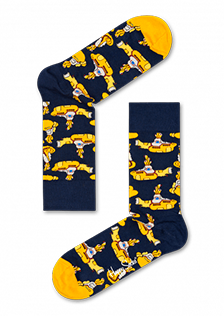
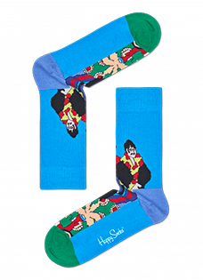
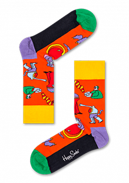
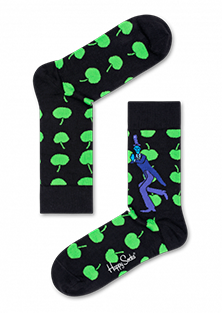
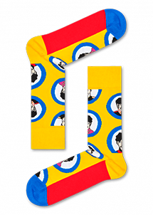
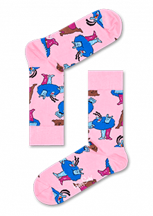
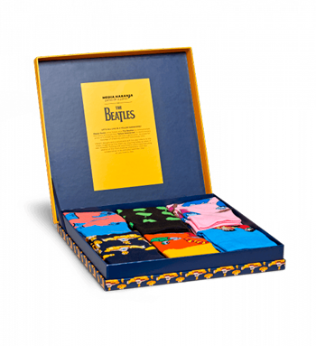

nuestros modelos
Principales medias de la colección. Encontralas en la sección “Música”

Yellow Submarine
$300

Peppermand
$300

Monsters
$300

Green Apple
$300

Beatles Portrait
$300

Meanie & Geremy
$300
código 20% de descuento
Hey Jude, somos tan fans de Los Beatles como vos. Te regalamos un 20% para que compartas esta colección con tu media naranja. CÓDIGO: ORANJESUBMARINE

sorteo triple naranja
Solo los realmente fanáticos pueden participar. Subí tu foto a Instagram usando tus medias de la colección y elegimos la más original. Podes ganar esta caja de dos pares para vos,para tu media naranja y un tercero en discordia. #Thebeatlessocks